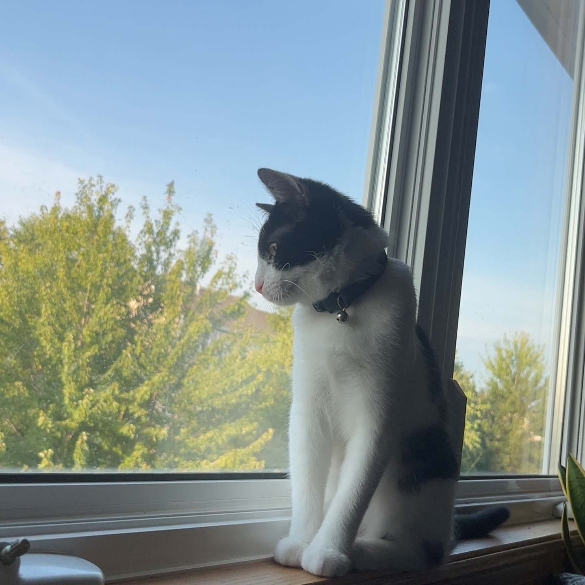

The Basics About Birdie
Birdie has been my pet cat since June of last year! She is a bicolor cat and, at the time of writing this, she is a year old. I got her as an early birthday present/graduation gift for myself since, prior to graduation, I did not have the space or means to care for a pet. I actually found her first via petfinder and, because she looked very similar to her sisters at the shelter, I wasn't sure the cat I got was the one I found on petfinder until I formally adopted her.
Birdie is a very playful and energetic cat, getting the zoomies when I come home from work every day. She also loves to climb high places so she's a big fan of her very tall cat tower. Aside from her cat tower, her favorite toy is a small plush christmas mouse. Birdie is also a cat with a strict routine, needing to have her food at very specific times of day. She also has the same morning and bedtime routine of laying with me for fifteen minutes before either going to play or going to sleep.
I don't consider myself someone who takes a lot of photos but ever since I got Birdie, I have found that most of my camera roll is of her.